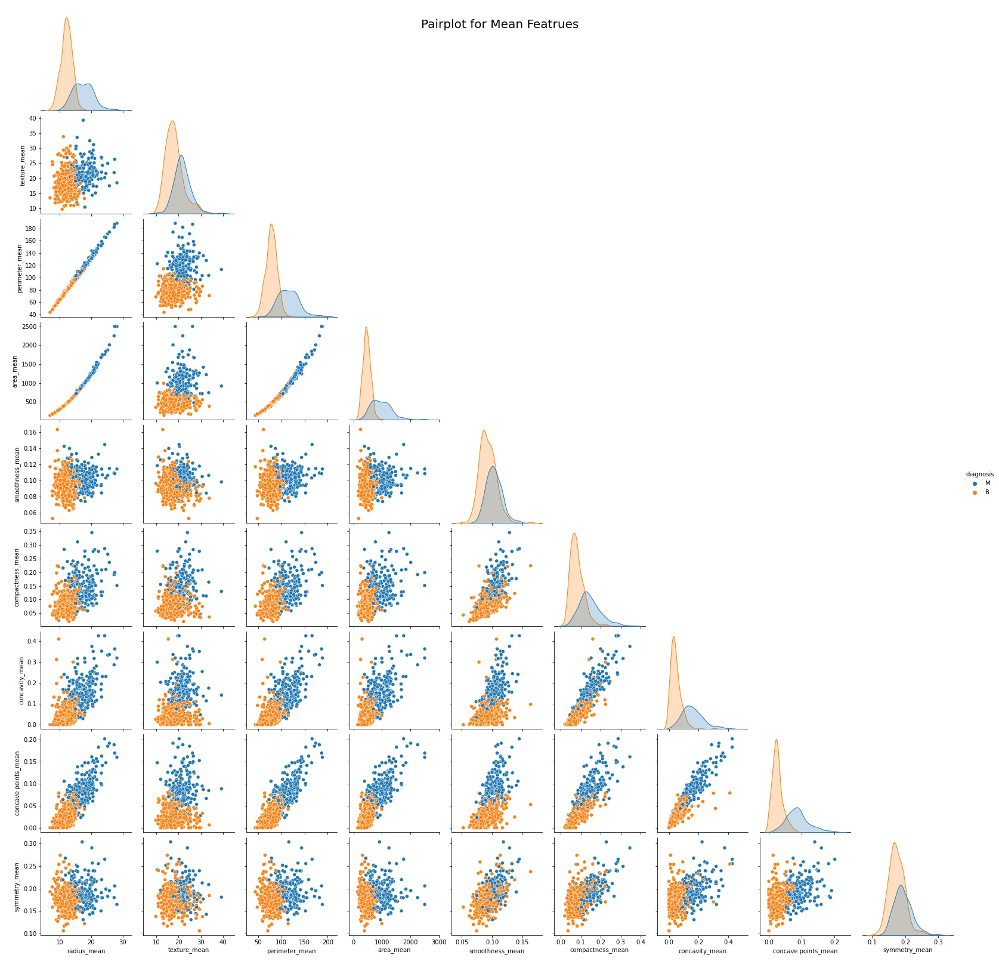

Breast Cancer Prediction
Machine Learning Project
Key Features
Normal Cells:
Morphologic abnormalities of the nucleus are key to establishing a diagnosis of malignancy in the daily practice of cytopathology and surgical pathology (Figs. 1, 2). These features have been used by pathologists for many decades to distinguish benign from malignant cells and to render diagnostic conclusions that guide patient management. Early descriptions of morphologic abnormalities in malignant cells go back to the work of Lionel S. Beale in the 1860s. A normal cell nucleus is usually symmetrical, round and smooth.
Cells Explain
Radius, Perimeter and Area of the cell nucleus are measures of size. Texture, Smoothness and Compactness of the cell nucleus are a measure of its chromatin distribution pattern. Concavity, Concave points and Symmetry reflect the degree of irregularity of the cell nucleus. Finally Fractal_dimension is a measure of the degree of complexity of the architecture of the nucleus particles.
Cancer Cell
Malignant cells from various anatomic sites often display a combination, but not necessarily all of these morphologic abnormalities. The art and science of distinguishing between benign and malignant cells rests on morphologic features of the nucleus, although other findings such as specimen cellularity are also important diagnostic considerations. Nuclear membrane irregularities include thickening, dents, folds, grooves, and pseudo-inclusions. Chromatin is abnormally distributed in malignant cells and is often coarse or vesicular, or can be delicate and more evenly distributed as in small cell neuroendocrine carcinomas.
Data Visualization
Observations of the data:
Total 569 instances: 357 Benign and 212 Malignant:

The graph below indicates there is multicollinearity between radius, perimeter and area attributes, as well as between concavity, concave points and compactness.
The histograms below show four of the most influential features in the data, and the frequency distribution of samples for each feature respectively. Two observations are readily apparent. First, there are more benign than malignant samples present in our dataset. Second, the prevalence of malignant samples increases with the magnitude of each feature.